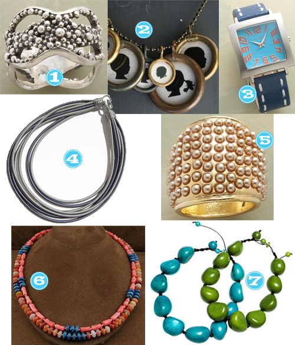
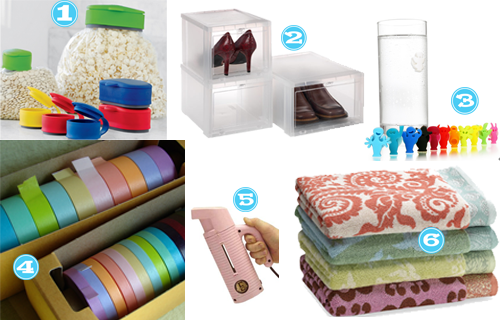

While strolling through my local mall Christmas Shopping, I stepped foot into Williams Sonoma and discovered what is going to quickly become an addiction. Excuse me while I wipe my drool. Sprinkles Cupcake Mixes! It was so tempting not to purchase each and every one of the flavors. What an awesome gift for yourself or for someone else… OR serve them at your holiday parties and watch how fast they go!
Hump Day Happy Hour: Merry Christmas Punch
December 16, 2009 by

We all know that the holidays really translates into a really good excuse to get yo’ drank on with close family and friends, right? So here’s another option for spiking the punchbowl.
Ingredients:
- 1 bottle raspberry vodka
- 72 ounces cranberry juice
- 1/2 bottle Absolut vodka
- 1 can Sprite soda
Directions:
Pour all ingredients (chilled beforehand) into a large container or punch bowl filled with ice. I think some of these Green Ice Lites would be a great substitution for ice cubes, just sayin’. Allow to chill. Serve in punch cups or tall glasses. Maybe something like these would be fun!
So, Last Weekend We Got Tipsy…
December 15, 2009 by

We told you we’d keep you posted here on some of our social gatherings…. This past weekend we attended a company Christmas party. Some things to note:
- None of us work for this company.
- We were expressly invited to this party to make it “fun”.*
- It didn’t matter that we didn’t work for this company, however our connection was Der’s mom.
- We had great food, great drinks, great company along with the best music from 1985-1993.
- Der taught us many dance moves such as The Gator, The Lawn Mower, No Strings Attached, Churning Butter, The Shopping Cart, The Water Sprinkler…and the list goes on and on.
- We found ways to line dance to many songs, none of which are of the country genre and we don’t normally line dance.
- We beat up the DJ for not playing Sweet Caroline and/or Party in the USA. (This may or may not be true)

*We succeeded. We were known as the “fun table”.
Guy Gift Guide: Golfer Edition
December 15, 2009 by

If your Saturday mornings are like my wife’s, there’s a 42% chance on any given week your sig will be out hitting the links. Well, at least before it got cold. But still, this should be soooo easy to buy for, right? Golf, I mean, get him golf stuff. But, you’ve probably already tried and failed at that. You’ve purchased that cute driver head cover of a tiger or a kuala or some other species, only to see (well actually to never see) him use it.
Here’s a guide on what golfers would actually want to receive. And, unlike my other guides, everything in here isn’t like a bazillions dollars. This is the last in my guest post series on what to get your guy for the Holidays. See my guide for Chefs and Geeks.
First: a Pro Tip — Steer clear of the following: clubs, putters, and golf balls. These are far too personal an item to choose for someone else. Notable exception: write a card with a handwritten note: “Redeemable for 1 putter, wedge, or wood of your choice.”
- Callaway HT Bag ($199) … Most guys have these golf bags that are designed for walking; that is that they’re really light. They’re made so you can walk the entire course. Does anyone know anyone who walks on a regular basis anymore? I do not, and most courses are not walk-friendly. This bag is made for the golf cart and is proud of it.
- 15′ Orange Head Retriever ($13) … It retrieves errand golf balls from the lake or someone’s back yard. A Necessity for anyone who isn’t a tremendous golfer. And don’t worry, you’d already know if your guy was tremendous golfer because his friends wouldn’t shut up about the unfairness of it all.
- Practice Net ($129.99) … Hey, it might get him out of the house and into the back yard for a while
- Tiger Woods 2010 for the Wii ($40) … Best golf game out there, and you might be able to find it on steep discount. (too soon?) If he already has, get this Wii Golf Club, which has cool written all over it.
- Nike or Callaway shirt ($27) … This technology shirt (get any that say Dry-Fit or Fit-Dry) is the most awesome shirt ever. Really, I love these things, and you’ll have the extra benefit of being able to dress your man for the golf course.
- Lessons from your local golf club: Really, this is the best gift. Even a set of three 30 minute lessons on putting will be remembered for a long, long time. You’re welcome Internets.
If you want help choosing which golf club to get lessons at, leave me a comment below with your City and I’ll suggest one for you.
Jesse is a guest author; his claim to fame is being Tipsy Society author AK’s husband. He creates websites at http://comalproductions.com.
Stuff That Stocking Girly Style!
December 15, 2009 by

Here are a few ideas for stocking stuffers of the girly kind ala ak! I think this is the perfect combo of girly meets geeky meets OCD if I do say so myself. Can I get a WHAT WHAT?!
- Levenger, Pocquettes Zipped Earbud Pouch Keychain – This is SO cool, I mean the little thing that fits inside to keep the earbuds from tangling up–can you say OCD much?
- Bagel Creations Etsy Shop, Adjustable Coffee Cozy-Bright – I purchased one of these a while back for a keno gift and also bought one for myself and they are awesome and very chic!
- Chia’sso, Pin Up Frames – OMG you know how we feel about polaroids around these parts and I think they are just too cute to pass up.
- Cambria Cove, iPouch Wallet by knomo-fuschia – Something like this is perfect for a mom who is still carrying a diaper bag..you can put all important things in this and just throw it in the diaper bag when you head out. Also, its perfect for those running out for a quick trip type of situations and you don’t want to haul the whole kitchen sink you have in your regular size purse–essentials only.
- JennaDesigns Etsy Shop, Travel or Pocket Tissue Holder/Cozy – Ditto in regards to keno as stated above, purchased one for myself as well. The great thing about this is that when you are rummaging around in your purse, the bright fabric makes it easier to find.
- Anne Taintor, She Was One Cocktail Away From Proving His Mother Right Magnet – I can’t tell you how funny I think this is as well as everything on this site.
- Anthropologie, Smith’s Rosebud Salve – This stuff is fab as a lip balm, for minor cuts, for dry skin, for a mini mani and the list goes on and on. And the smell of it is divine.
- Brookstone, My Life Digitial Photo Keychain – I love being able to just upload some pics and run out the door…it’s too hard to have printed pics in an envelope to show off.
- Crafts2Cherish Etsy Shop, Black Beret with Red Wet Felted Flower – In Houston, when it’s cold for that one day a year, this would be perfecto!
Christmas Wishlist: CR Edition
December 14, 2009 by

So a few of these are completely outrageous, because I can’t imagine spending the $. But in a world where money didn’t matter, here is a list of the things I want to see under my tree.
- Z Gallerie Lithe Vases ($14.95 – $18.95) – simple, yet intricate. Would be perfect for my bamboo!
- Hello Kitty Ceramic Watches ($995 – 2900) – yes, I am 29 and 3/4’s and am an admitted Hello Kitty junkie. These watches are too cute.
- Urban Outfitters Head Band ($18.00) – not even sure this would look good on me, just seems really unique and funky, like me.
- Yellow Strauss Toms (54.00) – fun and funky.
- Tyler Diva Scented Candle ($17.95) – I am just obsessed with these candles and this scent.
- Ikea Red Clock ($29.99) – love love love this cute little ticker.
- Logitech Cordless Desktop Wave ($79.99) – this is a want, definitely not a need. But if I could pick any out there, this wireless mouse and keyboard surely have my vote.
- Rotating Spheres Arc Floor Lamp ($79.99) – I am certain this would complete my house’s transformation to an Asian wannabe home.
- Pottery Barn Fruitwood Pillar Holders ($22.99) – too cute, very simple. I love candles and am sure I would be able to find some which would a nice reason to have these around.
- Ivy Mirror and ID Case ($16.00) – did I also ever mention that I am notorious for constantly misplacing my ID, debit card, keys, mind, and sanity. Think this will help???
- Puma Hoodie ($69.00) – did I ever mention I am obsessed with Hoodies? Any of the Tipsy girls can attest to this. I am convinced this is the perfect hoodie for me.
- Oh and did I mention this little guy (priceless) – no comment :).
A Kitchen Gadget That Will Change. Your. Life.
December 14, 2009 by
I have this recipe that I would say I make fairly often…special occasion, holiday, what have you… The problem with this recipe? The everlovinghandcrampingsifting. I mean holy mother of hell, the sifting alone could kill you. Then I found it. IT. A battery operated sifter! It’s UhMayZING! I have one and I gifted it 3 times last year.

Ladies, This is a Way to Destroy Your Husband at Golf
December 10, 2009 by
So this is our Christmas tradition at my parents house… Christmas morning we eat breakfast, we open gifts, we get dinner started and then we get our game on.
Since we live in the Houston area, the weather is generally not what you think of as wintery…its more like throw a jacket on and go outside and you are fine type of weather. So while dinner is cookin’, we get to gamin’ and let me tell you you might as well have yelled SHALLONGE! The competitiveness that comes out here is unbelievable.
Here’s some ideas for ya…

What do you guys do on Christmas Day?
Christmas List: Der Edition
December 9, 2009 by
So you all saw AK’s list of fabulousness. Now it’s my turn.
(Pssst…Husband PLEASE pay careful attention to what is to follow)

- Victoria’s Secret, The Soft Sexy Wrap -I love the fact that this is like an upgraded t-shirt/cardigan combo. That is My FAVORITE combo and pretty much daily uniform, by the way.
- Best Buy, Nikon D5000– I would love this camera more than any of my family members, including my dogs. Ook, not them. But everyone else. If I hadn’t already proven myself to be an expensive camera breaker, I MIGHT actually be eligible for this gift.
- Restoration Hardware, Telescoping Frames– Being that I just got married 10ish months ago, we have more pictures than we know what to do with. These are so unique and different.
- Macys, Fiesta Canisters– I ADORE the green. These would look so cute in my colorful kitchen.
- Etsy, dearestinez Large Leaf Earrings -UM so cute, so fun, so funky. I just may be gifting these to myself for Christmas.
- Old Navy, Womens Cable Knit Slipper Boots– My toesies would be so toasty in these. I’ve seen a version of these everywhere and I have been coveting.
- Urban Outfitters, Dachshund Lamp– Do I even need to go into why I would want/need this? No, I didn’t think so.
- Ann Taylor LOFT, Refined Knit Ruffle Neck Dress– Because I NEED more ruffles in my life. NO, I don’t have anywhere to wear it! SO??
- Mac Cosmetics, Tinted Lipglass in Spite -This was the first lipglass that I ever owned and I think I need to bring it back into my life Christmas 2009. It’s a mauvy pink and perfection.
- Pier1, Assorted Doorknob Wall Hooks– I’ve been eyeing these babies for a while now. What a super cute way to hang your coat or whatevs.
- Macys, Joseph Joseph Multi Color Spatula Design Cutting Board– Cute, colorful and belongs in mah kitchen!
- Gap, Mesh Chain Necklace– I want this for two reasons: a) it’s a subtle way to do the whole sequin trend going on and b) I’ve already planned my New Years outfit and it won’t be complete without it.
- Nordstrom, Jeffrey Campbell ‘Charo’ Slingback Sandal– Ruffles, love. Red, Love. Perfect HOT date with the hubby shoe. Nuff said.
- bossa, Shiraleah Jennifer Large Tote Bag– This brand is pretty sweet…looks remarkably similar to HOBO International for a fraction of the cost, plus this blue color is totally rocking my world.
- ZenniOptical, 2344 Plastic Full-Rim Frame– HOT pink frames? Must.have.
Oh, I almost forgot… while I’m wishing… I’ll take an endless supply of these.

Christmas Wishlist: AK Edition
December 8, 2009 by
Der thought it’d be a good idea if we all shared our dream Christmas Wishlists for this year–she explicitly said if money was no object what would you ask for. So I picked a little something something or alot of something something. But I categorized it for you foos because I’m OCD like that. Anyway…have at it. I’m drooling.
Shoes & Accessories

- Boden, Patent Buckle Flats-Navy – I love love love this color combo.
- Piperlime, Bernardo Google-Red – I’ve been wanting a driving moc
- Zappos, PUMA Cabana Racer II Wn’s-Hi Risk Red/White/Blue Mist – a vintage tennis shoe mixed with the bomb color combo..could not be more AK
- Dreams Corner Etsy Shop, Scarf ruffle gray in wool italian fabric with vintage button – ohhhh ruffles, yes please
- bossa, Shiraleah Recession collection tote bag-Pewter – I’ve been looking for a metallic purse that’s not to out there…I think this might be it.
- Levenger, Pen Pocket Briefcase with Pen – a cute little notepad to have with me to write down stuff to remember since I can’t remember shit anymore–can you say old?
- Abas, Cate Accordian-Classique Blue – this was on my list last year, turquoise…my favorite color
- UGG, Women’s Classic Cardy-Grey – this was newly added thanks to Court
Jewelry

- Sundance, Pitter-Patter Ring – not sure what it is about this ring, I’m just drawn to it.
- Craftsbury Kids, Custom Silhouette Pendants-Medium – would I ever be able to get a profile shot of my 14 mo to send in for one of these…aren’t they SO cute??
- Sundance, Modern Times Watch-Blue – again, the color combo got me…would be a great occasional watch
- Sleeks Etsy Shop, Silk Necklace-Slate Grey – I love this and am envisioning it sprucing up my tee collections
- Sundance, Champagne Pincushion Ring – I don’t wear gold much but man o man this is a statement ring
- Silver Tribe, Native American Navajo Indian Multicolor Sterling Silver Bead Necklace Jewelry – picture it…a navy tee with this necklace…OMG
- Belartes, Tagua Adjustable Necklace – this one is thanks to O Magazine..aren’t they gorgeous??
Clothing

- Sundance, Jacket Militaire-Ice Blue – I love how this is the perfect shade of bright..right up my alley
- Kate Boggiano, Tank Top-Sparkling Grape – I have a couple of these in neutral colors and would love to brighten up my collection.
- Nordstrom, Velvet by Graham & Spencer “Kylea” Sequin Tank – Sequins are everywhere in stores, have you noticed?
- Chadwicks, Sculptural Cross Neck Babydoll – Love this neckline AND the color
- Target, Merona Elbow Sleeve Turtleneck Top – Newport Aqua – This sleeve length is perfect for Houston weather–its a turtleneck but a shorter sleeve–perfecto
- Victoria’s Secret-Open cardigan tee-Blackberry – COMFY is what comes to mind when I see this..and adorable.
Odds & Ends

- Sur la Table, Copco Round Bag Caps – Chip clips are so 2008
- The Container Store, Drop-Front Shoe Boxes – This would be the beginning of my dream closet
- Amazon, Vacu Vin Glass Markers Party People – Another new edition thanks to Sarah
- happytape, so many pretty solids 20pak – My brown paper bag wrapping would be so happy
- Amazon, Jiffy Steamer ESTEAM Travel Steamers-Pink – a PINK clothing steamer!! SQUEEEEE!
- Bed Bath & Beyond, Amy Butler Bath Towels-One of each please – I couldn’t believe it when I saw these..I would buy all different ones and mix them up because I’m eclectic like that.
Gadgets

- Sur la Table, Skybar Wine System – It’s like WHAT?! are we at the AK casa or a wine bar?!
- Urban Outfitters, Speedball Screenprinting Kit – I would love to learn how to do this
- Paper Source, Letterpress Machine Combo Kit – Again I would love to learn how to do this
- Amazon, Kindle Wireless Reading Device – I would load this sucker up and take it with me wherever I went
- Amazon, Polaroid CZA-10011B PoGo Instant Mobile Printer – Isn’t this the coolest thing?
- The Demy – A recipe gadget, perfect, love it.
Books

- Amazon, Confections of a Closet Master Baker: One Woman’s Sweet Journey from Unhappy Hollywood Executive to Contented Country Baker – About Sandra Bullock’s sister
- Amazon, Kirtsy Takes a Bow: A Celebration of Women’s Online Favorites – The pictures I’ve seen online alone are drawing me to this book
- Amazon, Stay Home, Stay Happy: 10 Secrets to Loving At-Home Motherhood – 10 secrets to anything is intriguing to me
- Amazon, Twilight – Yes, I admit, I might be the last person on Earth that hasn’t read this book or seen the movie..I should start, yes?
- Amazon, Guac Off! – The perfect end to this post–Guac Guac Guac–I have an unhealthy obssession to it, but it’s the good fat right?
So what’s on your wishlist this year?


{kind=link}
{kind=link}
Recent Comments